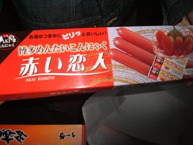

日々、想ふ
〜過去感じたことがつれづれと〜
（できるだけ最大化してお読みください）
日々、想ふ
まとめて。１２/２９・３０・３１
残すところあと１日ですね、タケユキです。
２９日は高校の同窓会があったから帰省してて
午後にボーリングやってから同窓会行ってきました。
１００人強集まる大きな同窓会で
卒業以来会ってない人も多くて二時間があっという間。
お互い会わないまま過ぎた２年半っていう時間は
２時間で埋めるにはやっぱり大きすぎて、まだまだ話し足りない。
そのまま友達と二次会へ。
高校の近辺は田舎(俺の実家ほどではないが)なんで
二次会のお店も他のグループとかぶってたりして
１次会のとこでお疲れ〜って別れたのにまた会ったがな、みたいな。
さらには俺らの２次会終わる頃に友達現れて、
「俺ら今から３次会がここ」
とかいうおもしろい事が起きてたり。
ここで同窓会の総括を勝手に。
まずダニエル！元カノに絡みすぎ！
ガク！元カノに絡めなさすぎ！
そして俺！好きだった人キレさせすぎ！
・・そんなに怒らんといてぇ........orz
そんな感じで流れていった飲み会。
三次会は元４(元１年４組)のメンバー１１人でシダックスへ。
朝５時までカラオケやってなぜか恋愛レボリューションで締め。
それから解散。
ほんとあっという間だった。
今度は春にでも集まれるといいなと思う、
就活組は大変かもしれんけども。
そういえばくーちゃんから九州土産「赤い恋人」をもらった。

一部からは大非難、一部からは絶賛のこの食い物、
大晦日の今日、晩ご飯に食べます、どんなもんか。
というわけで今年の更新はこれが最後です、良いお年を。
今日の今年最後：たぶん家で過ごします。
久しぶりに新幹線で。１２/２８
帰省します。
なのでちょいと不定期更新になります、タケユキでした。
今日の財布：ちょっと心もとない。
ある意味合コン以上に緊張。１２/２７
さて、タケユキです。
来年配属される研究室の忘年会に誘われて行って来ました。
研究室飲みデビューです。
今までやったことのある飲み会とかってのは
メンバーはだいたいが同い年か同学年だったけど、
この飲みは全員は目上(上級生・助手)の人。
遅刻してはならんと一人緊張して集合場所へ。
待ち合わせ場所は梅田ビックマンのところ。
(梅田ビックマン：広島駅の噴水前みたいなもん)
着くには着いたけどどの人達が研究室の人達かが分からない。
しまった、そこを考えてなかった。
飲み会に来る友達に電話して事なきを得ましたが。
最初少し緊張したけど飲み会は楽しかったです、
大学の総長に怒られたことがある人がいたり、
見た目で俺はできなそうな人だと言われてみたり。
来年は楽しい一年過ごせそう。
今日のスペシャルサンクス：バイト代わってくれたオグ。
雪の降る中。１２/２６
バイクに乗るとほんと怖いです、タケユキです。
今日で年内のバイトは終了。
明日からのみがちょいと続くけど楽しく行こう。
今日の〜：〜〜〜。
今日は。１２/２５
M1の優勝者は意外なところからきましたね、
おもしろさでは順当だとは思うけど、タケユキです。
今日は用事で梅田に行ったけど
クリスマスのせいか人が大量発生。
子連れの家族とかいろいろおもろいもんが見れました。
たまには普通に梅田にも出てみるもんだ。
今日の晩ご飯：いちおうチキン。
この日は３年連続でバイト。１２/２４
働いて働いて、タケユキです。
クリスマスに結婚式の二次会するやつらもどうかと思うけど
今日はバイトの先輩っていいなぁと思った一日だった。
その先輩は普段は俺にめんどい仕事おしつけるし
バイトの着替える部屋(ロッカー？)とかでも好き勝手やるんだけど、
一番どうにかしてほしいって助けてくれる先輩は
頼りになるなと思った。
普段は「なんねぇこの人は」って思うこともあるけど
たった一つのそういう行動で吹き飛ばす、
そういうことが言える、できる人になりたいと思った。
あ、でもその先輩を尊敬したのは
２年ちょっとこのバイトやってて初めてだったのはここだけの話。
今日のクリスマスプレゼント：バイト先の塾長からお菓子のみ。
勘違いが多くて困る。１２/２３
こんな時間(2:41)にテレビで「リング」放送してんじゃねーーーー！！
ビビるじゃねーか、タケユキです。
世はクリスマスイブイブとか言ってる輩が
現れて後を絶たない２３日です、それが特に憎らしいのですが
もともとクリスマスってのはイエス・キリストの降誕（誕生）を祝う
キリスト教の記念日・祭日で、12月25日がこれに当たります。
しかしユダヤ教では日没を一日の境目としているために
12月24日夕刻から朝までをクリスマス・イブとして祝う、
そういうものでクリスマス・イブのイブは夜を意味するeveningから
きています、
というわけで決してクリスマスの前夜という意味ではなく
クリスマスにおける夜(前夜ではない)という意味なのです。
だから「イブイブーッ！」とかって調子乗ってる輩は雪に埋もれてしまえばいい。
ええ、今日もバイトでしたよ？
明日は昼から塾バイト、夜から梅田でバイトです。
・・・イブイブーーッ！！(壊れた)
今日のバイト：お客にイライライライラ。
あらしのよるに。１２/２２
書いてなかったけど昨日が俺にとっての今年の初雪だったわけですが
(いままでに何度か雪降ったみたいだけどバイトだったり
バイトだったりバイトだったりで雪が降ってるのを見てない)
今日今年初めて積もった雪を見ました、タケユキです。
昼。太陽もはっきり顔を出すいい天気だったせいで
太陽が照り、積もった雪が溶け始める。
きれいに溶ければ問題ないんだけど
たちの悪いことに凍り出す道路。
しかもうちのマンションの真ん前が。
まぁこけたりはしなかったけどちょっと学校行く気がくじけかけた。
明日からは冬休み。
でも明日も天気が悪いみたいみたいなんで
今のうちに溜まってた本を読もうか。
夏に借りた本(教授から借りた本)とかまだ読んでないし。
がんばろう。
今日の晩ご飯：山頭火でラーメン。
本番、その前に。１２/２１〜その２〜
ある人は二度読むことになるかもしれませんが、タケユキです。
というわけで昨日知った話、とりあえず以下を。
Last Christmas
I gave you my heart
But the very next day you gave it way
This year
To save me from tears
I'll give it to someone special.
これはWHAM!の「Last Christmas」のサビ部分です。
曲自体は知ってると思うけど意外に知らないのが歌詞の内容。
これって去年の失恋を歌った歌なんですね、
Last Cristmas ＝ 最後のクリスマスって思ってた。
**************************************************
去年のクリスマス、
告白したけれど、次の日すぐにあなたは私を振った
今年は泣かないために
私は特別な人に思いを伝えます
**************************************************
訳の拙さはおいといて、前向きな思いが心を動かします。
今年のクリスマスまで、あと三日。
泣かないように過ごせますように。
今現在。１２/２１〜その１〜
今現在タケユキは家でごろごろ中です、タケユキです。
今日の日記：日々の生活の細かいところまで皆様へ。
↑これを書いたあとにバイトに行く前の更新しようと思ってたんだけど
忘れてでかけてしまったので今日の作戦失敗。
耐えろ。１２/２０
バイトですよ、忘年会シーズンですよ、タケユキですよ。
今日は１２番テーブルに座ってたババア(以下客)がうざくてならんかった、
明らかにあんたチューハイライム１つしか頼んでなかったやろが、
忙しさピークの時にこの客(以下ばばあ)は、
頼まれたチューハイライム１つ持ってったら
「おいにーちゃん、ふたちゅゆーたやろが、ふたーちゅ」
。。。
。。。。。。
んああああぁぁぁぁ！！！
酔った顔して舌回ってなくてなにを抜かすか。
しかも２つのうちてひとつはばばあ(以下人としてカス)ので、
もうひとつは人としてカス(以下頼むから二度とくるな)の向かいに
座ってたおばさんの分だったらしいけど
それは頼むから二度とくるな(以下クソ)が勝手におばさんのも頼んでたみたいで
クソから渡されたライムを持ってちょっと困った顔してた。
別に普段の時からこのクソ(以下○んでしまえ)酔ってるわ〜で終わるけど
忙しさピークの時にこの仕打ち、
しかしなぜに大阪のばばあってのはこうタチが悪いか。
今日の実行できなかった名言：
お客さまは神様ではありません、王様です。
王様は人間なので間違うこともあります、
でも逆らってはいけません。
確かに視界がはっきりしてるとは思ったんだけど。１２/１９
さて、忘年会だったわけですが、タケユキです。
集合時間は２０：１５、居酒屋現地集合．
学校終わって帰ってきてちょっと時間あったから
うつらうつらしてたらいつのまにか夢の世界へ。
起きたらちょうど２０：１５．
おいおいおいおい！！
遅刻確定じゃねえかよ！
あせってとりあえず遅れるって電話してでかける準備。
近くにあるだろう眼鏡を探すも見当たらず、
あれ？なんでだろ、寝る直前までつけてるだろうから近くにあるはずなのに。
時間もないせいで余計にあせる。
ベッドの枕元、こたつの上、パソコン周りを見ても姿は見えず。。
こういう時にありがちなサングラスみたいにおでこのとこに
行ってんのかなぁと頭を触るももちろんなし。
おかしいな、洗面台のとこかいなと洗面台へ。
洗面台の鏡に映る自分の姿、うんいつもの自分だ。
いつもの？・・かけてんじゃん、眼鏡。。。
今日のバイク：シートに霜おりてるんですけど。
世界１位の人。１２/１８
手袋を
しても感じる
この寒さ
タケユキです。
今日はバイト先の宴会は高校の柔道部のOB会、
かと思いきや柔道世界選手権の優勝祝賀会だった。
主役は女子無差別級で優勝したあの人。
テレビで見るよりちっちゃいんだなぁと
ちょくちょく視線をそっちにやりながら仕事してた。
無差別級って言ってもそんなにごつくもなかった(←失礼)から
ほんとに強いんかなぁと思って見てると、
「何言っとんねん」
って言って隣の人の背中に突っ込みいれた音が
ドンッ
あ、やっぱり世界チャンピオンだ。
今日のバイト：長い間お疲れ様でした。
クリパって言うらしいね。１２/１７
もうやばい、寒すぎる。
最高気温８度で最低気温２度ですか。
アホかっつー話ですよ。
そんな日にバイクで梅田まで行く俺は
それ以上にアホかっつー話ですよ。
梅田まで走ってた時の気温が４度。
新御堂をけっこう飛ばし気味に９０kmで走行。
人間の体感温度Tは外の気温をｔとして風速をVとすると
一般的に「T = ｔ−４√V」と表されることが知られています。
これはリンケの体感温度の式っていうんだけど
この式に当てはめると俺のこの時の体感温度はなんとおよそマイナス３０度。
おいおいほんまかいな、氷点下の世界じゃないか。
もうちょっとリアルな数字でておーっと思うかと思ったら
ちょっとひくくらいの温度じゃないですか。
明日は雪が降るみたいだし電車で梅田に行こうと思います、タケユキです。
さて、今日のバイト。
いつもどおりの結婚式の二次会ではなくて大学生の宴会。
どこかのサークルのクリスマスパーティらしく
お客さんの中にはサンタのコスプレした女の子がいた、
あーこんなのもいいなぁと思ったのが最初の５分だけ。
宴会始まってからはドリンクの注文が大量に。
ちょうど俺がドリンク作るポジションにいてたから地獄。
お前らカシスオレンジ頼みすぎ。
オーダー書いた紙に８割くらいの確率でカシスの文字。
少しがんばってビールでも飲んどいてくれっと心底思った。
一段落してからちょっと周りを見ると
１０人以上サンタのコスプレした女の子がいることが判明。
でも俺にはプレゼントを持ってはきてくれませんでした。
俺のサンタさんはこの中にはいなかったみたい。
１０人以上いたんだから俺のサンタになってくれって言ってみたらよかった。
一人くらいなってくれたかもしれんのに。
冗談ですよ？
言ってませんよ？
今日の帰り道：ほんと凍え死ぬ。
ラストチャンス？１２/１６
とある事情でホームページを作ることになりました。
それで昔買ったhtmlタグ辞典を探してみるも見つからず。。
俺のhtmlタグ辞典持ってる人ここ見てたら急ぎ返却希望です、タケユキです。
今日は甘酒で舌火傷したのでテンションが低いです。
明日のバイト先での宴会は７,８０人規模のコンパが入ってるらしい。
今年最後にして最大のイベントまであと一週間、
店員の俺がドリンク注文伺う振りして
お客さんの携帯番号伺ってみてもいいかもしれない。
あと一週間、あきらめるには、まだ早い。
今日のバイト：しんどかった。